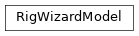

iblrig.gui.wizard.RigWizardModel

- class iblrig.gui.wizard.RigWizardModel[source]
RigWizardModel(alyx: one.webclient.AlyxClient | None = None, procedures: list | None = None, projects: list | None = None, task_name: str | None = None, user: str | None = None, subject: str | None = None, session_folder: pathlib.Path | None = None, free_reward_time: float | None = None, file_iblrig_settings: pathlib.Path | str | None = None, file_hardware_settings: pathlib.Path | str | None = None)
- __init__(alyx=None, procedures=None, projects=None, task_name=None, user=None, subject=None, session_folder=None, free_reward_time=None, file_iblrig_settings=None, file_hardware_settings=None)
- Parameters:
- Return type:
None
- get_task_extra_parser(task_name)[source]
Get an extra parser for the given task name.
- Parameters:
task_name – The name of the task
- Returns:
The extra parser for the given task name
- Return type:
ArgumentParser- Parameters:
task_name (str)
- get_task_parameters(task_name)[source]
Return parameters for the given task.
- Parameters:
task_name – The name of the task
- Returns:
The parameters for the given task
- Return type:
Bunch- Parameters:
task_name (str)
- alyx: AlyxClient | None = None
- test_subject_name = 'test_subject'